DISC GOLF / ICELAND / 2026
FRISBÍGOLF
ICELAND
Vellir, brautir og leiðbeiningar — sett fram eins og íslensk field guide, ekki app.

FRISBÍGOLFVELLIR / ÍSLAND
Veldu svæði, finndu völl og farðu að kasta. Engin óþarfa flækja — bara vel hannaðar upplýsingar fyrir fólk sem spilar.
COLLECTIONS / 01—03
Veldu svæði.
01
HÖFUÐBORGARSVÆÐI
Reykjavík

02
NORÐURLAND
Akureyri

03
AUSTURLAND
Egilsstaðir

 FEATURE / 01
FEATURE / 01
REYKJAVÍK / 18 HOLUR / PAR 58
Grafarholt.
Tæknilegur og hæðóttur völlur með útsýni yfir borgina. Brautir, upplýsingar og leiðbeiningar á einum stað.
- HOLUR
- 18
- PAR
- 58
- LENGD
- 1.973 m
FRISBÍ AI / CONCIERGE
Spyrðu um frisbígolf.
Diskar, reglur, kasttækni, byrjendaráð og vellirnir á síðunni.
ON-SITE ASSISTANT / ENGUN INNSKRÁNING
FRISBÍ AI
READY
FRISBÍ AI
Hæ! Spyrðu mig um frisbígolf — diska, reglur, kast, byrjendaráð eða velli.
EAT • SLEEP • FRISBEE • REPEAT